基于物理的着色 1（译）
2016-5-20
原文：Background: Physically-Based Shading @ SIGGRAPH 2010 Course: Physically-Based Shading Models in Film and Game Production
在这一篇教程中，我们会重温下基于物理着色背后的基本概念，从基于物理性质的描述开始，然后使用相关数学公式进行量化的描述，最后讨论下这些数学模型如何在着色器中实现。
基于物理的着色
着色器背后的物理现象是有关于光和物质的之间的交互。理解了这些现象后，能让我们对光的本质有一个基本的认识。
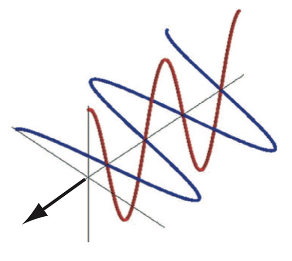
Figure 1: 光是电磁波
光是一种电磁波，它会垂直于它的传播方向来回震荡（Figure 1）。
由于光是一种波，波有一个波长的特性，波长是波顶到波顶之间的距离。电磁波长的范围非常广，但是只有一小部分（大约 400 到 700 纳米）是可见的，所以我们只关注这一可见的波分（Figure 2）。
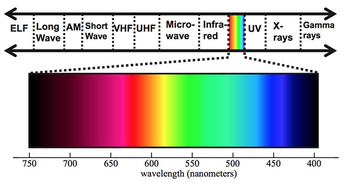
Figure 2: 可见光谱
光在物质上表现出的效果被定义为一种叫做折射率的属性。折射率是一个复数，它的实部表示物质如何影响光速（相对于真空减速多少），虚部表示光线在传播的时候是否被吸收（转化成其它形式的能量）。折射率和光波长函数有所不同。
均匀的介质
最简单的情况是光物质在一个均匀的介质中传播。这部分介质物质有着恒定的折射指数（和光波长成一定的比例；这种情况下的可见光的任何变化远远小于100纳米或者忽略不计）。
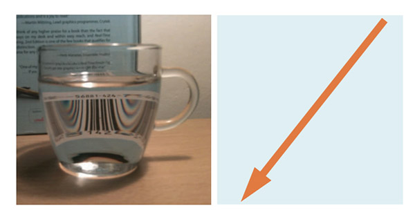
Figure 3: 光在透明的介质中传播（水、玻璃，左图），沿着直线并有着同样的强度和颜色（右图）（直线指的是在单一介质内部）。
透明的介质对于可见光波长会产生非常小的折射率。这意味着不会产生很大的吸收，光沿着直线传播穿过介质。透明的介质包括水和玻璃（Figure 3）。
如果均匀的介质在可见光谱范围内有很强的吸收率，它将会吸收一部分穿过它的光。穿过的距离越长，吸收的越多。然而光的方向并不会改变，只是强度会变弱。亦或是，吸收率有选择性的对于特定的可见光波长（不同的可见光波长对于眼睛来说就是不同的颜色）（Figure 4）。
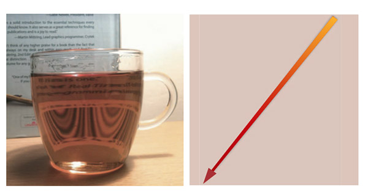
Figure 4: 光传沿着直线穿过透明、易吸收的介质（左图），但是随着距离增加强度变弱并变色（右图）。
通过观察介质物质的吸收率。例如，水实际上只吸收非常小的可见光，特别是在光谱的红端。在英寸级别是可以忽略不计的（Figure 3），但是超过几英尺后效果就变得非常明显了（Figure 5）。
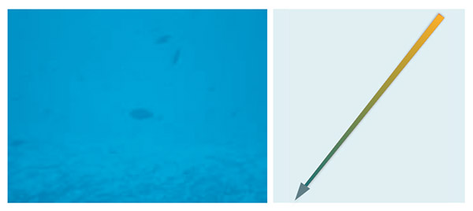
Figure 5: 在长距离之后，原本细微的吸收率变得非常明显。
散射
在均匀的介质中，光总是持续沿着直线传播，不会改变方向（虽然强度会随着吸收变弱）。不同介质有着不同的折射率。如果折射率缓慢连续的变化，那么光线会弯曲成一个曲线。然而，如果折射率在短距离内（相对于波长）突然发生变化，那光会产生散射，分叉到多个方向上。注意散射并不改变总体光的数量。
一些微小的颗粒会造成反射率和周围产生差异。这就造成了光从任意可能的方向上散射出去（Figure 6）。注意散射光的传播在所有方向上都是一致的，不依赖于微粒的类型。有些是向前散射，有些是向后散射，有些在特定的方向上会产生更复杂的传播。
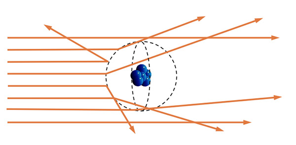
Figure 6: 微粒导致光散射到任意方向上。
在哑介质中，散射强度足以产生随机光传播方向（Figure7）。在半透明或不透明的介质中，散射强度非常高，以至于光传播方向完全随机（Figure 8）。
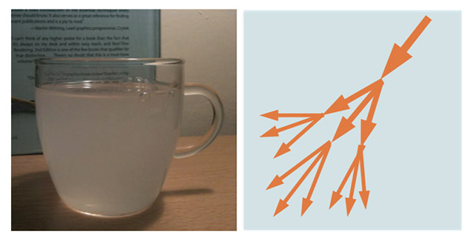
Figure 7: 光在哑介质中（左图）随着传播产生了随机的传播方向（右图）。
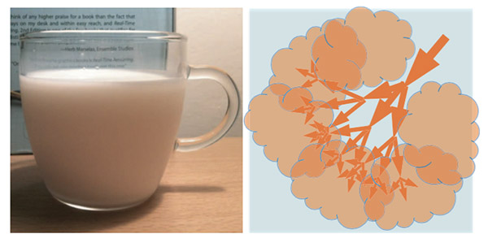
Figure 8: 光在半透明或者不透明介质中（左图）随着传播方向变得完全随机（右图）。
吸收和散射程度都依赖于测量等级。像空气这种清晰的介质，它的散射是忽略不计的，但是当超过一定距离（几英里）后光散射就变得相当的可观了（Figure 9）。
Figure 9: 即使是非常清晰的空气在经过几英里后也会产生相当大的散射。
介质表现
上一节介绍了光和物质的两种不同的交互模式。物质的复数折射率部分会导致吸收，超过一定距离后，光的数量减少（如果吸收特定的波长也可能导致光的颜色发生改变），但是光的方向不会改变。另一方面，折射率的快速变化导致散射，光的方向发生改变（分叉到多个方向上），但是光的整体数量和光谱分布不会发生变化。还有第三种交互模式，发射，其他类型的能量产生了新的光（和吸收正好相反）。光源中会发生这种情况，但是在着色器中一般不会关心。
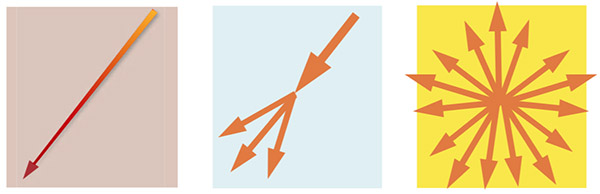
Figure 10: 三种光和物质的交互模式：吸收、散射、发射。
大多数介质都在一定程度上散射和吸收光。每一种介质现象都取决于散射和吸收的相对数量。Figure 11 展示了介质的散射和吸收的不同的组合。
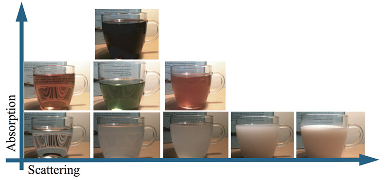
Figure 11: 各种不同的光的散射和吸收的介质。
在平面边界上的散射
Maxwell 方程组可以用来计算光在折射率发生改变时的光的行为，但是大多数情况下并不能很好的解决问题。只有在一种特定的情况下可行，这对着色来说有着重大的意义。这种情况就是在两种不同折射率物体之间的一个无限的、完美的平面边界。这对于描述一个物体表面来说非常棒，边界的一边是空气的折射率，另一边是物体的折射率。在这种特定情况下的Maxwell 方程组的解叫做 Fresnel 方程组。
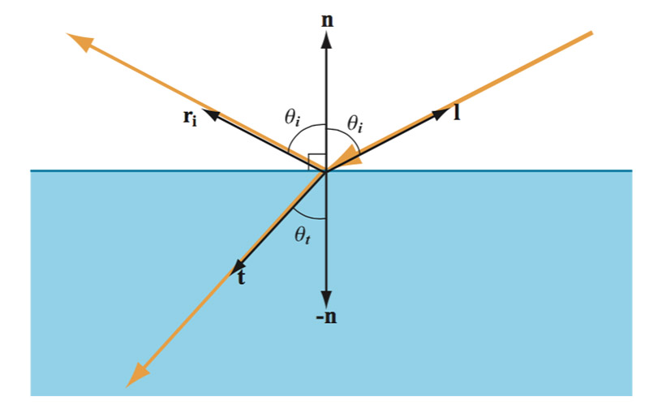
Figure 12: 折射率在平面边界的变化导致光散射到两个方向上。
虽然真实物体的表面并不是无限的，但是相比于光的波长来说确实可以这么认为。至于完美的平面，或许会有这样的反对声，就是没有物体的表面是真正平坦的。即使没有其他的东西，单独的原子也会形成微小尺度的隆起。然而和其它东西一样，这种隆起的规模和波长相比相差多少是至关重要的。在大小只有几百纳米的表面上确实会出现完美的平面，这种平面被称为光学平面，通常这被用在搞精度的光学仪器上，比如望远镜。
在这种特定的情况下，平面折射率边界，光不会散射到所有可能的方向上，而是分叉到两个确切的方向上：反射和折射（Figure 12）。
正如 Figure 12 所看到的，反射角等于入射角，但是和折射角不一样。折射角依赖于介质的折射率（ Snell 定律）。Fresnel 方程组描述了反射和折射的比例，这在下面会讨论到。
非光学平面
当然，现实情况下大多数物体表面都不会像望远镜镜面一样的光亮。那么在非光学平面上会发生什么呢？大多数情况下，表面的确实有很多的不规整，这种不规整的程度比波长要大很多，但是又足够小以致无法察觉到（比一个像素还要小）。这种情况下，表面就像是由大量的微光学表面组成，看起来是很多不同朝向的小表面（Figure 13）。
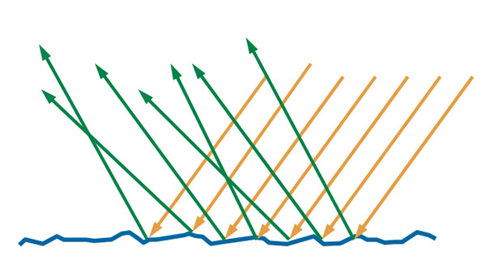
Figure 13: 肉眼能看到的非光学平面的反射光是由很多不同朝向的小的光学平面的反射光组成。
在这种观察级别下，越粗糙的表面，反射光看上去越模糊，因为从整体来看微表面朝向的差异更大（Figure 14）。
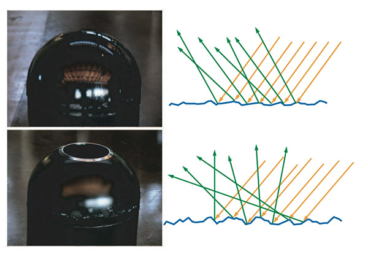
Figure 14: 上面那张图，表面相对更平滑，微表面的朝向有些许差异，所以反射光的方向也只有一点差异，比较清晰的反射。下面的图中，表面比较粗糙，微表面的朝向差异比较大，所以反射光的方向也各不相同，反射效果也较模糊。注意从肉眼可见级别来说，上面两个都可以说是平滑的，我们这里讨论的粗糙差异是从微观的角度来考虑的。
在着色器中，通常统计对待这种微几何形态，并且认为表面的反射和折射光是在多个方向上（Figure 15）。
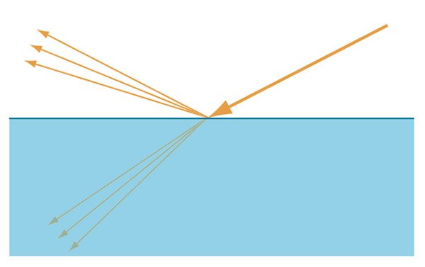
Figure 15: 当从宏观上观察时，可以认为非光学平面的反射和折射光是在多个不同方向上的。
次表面散射
折射的光线到底发生了什么呢？这依赖于物体的成分。金属在可见光谱上有这非常高的吸收率，所有被折射的光立刻被吸收了（被自由电子吸收）。非金属（也称为电介质或绝缘体）表现为均匀的介质，当光在其中折射时，呈现出吸收的范围，散射的行为就像我们前几节讨论的一样。大多数情况下，部分的折射光会发生足够多的散射次数，以至最后再次从同一个表面发射出去（Figure 16）。
Figure 16: 左边的金属材质，所有的折射光能量迅速被自由电子所吸收。右边的非金属材质，折射光经过散射，知道再次被发射出表面（部分会被吸收）。

Figure 16 的右图中，你可以看到次表面散射的光线（蓝色的箭头）是从表面的不同点发射出去的，距离光线的射入点的距离也各不相同。Figure 17 展示了这种距离和像素尺寸的两种情况下的关系。左上图中，像素比次表面散射的入射点到出射点的距离还大，那么这段距离就可以被忽略，次表面散射光的出入点可以被假定为是同一点，如右上图所示。这就允许着色器将其作为一个完全局部的过程来处理：射出点依赖于相同位置上的射入点。Figure 17 下面的图中，像素比射入射出距离要小，这种情况下，每一个点的着色都会影响其他店的光照。为了得到这个效果，局部的处理是不够的，需要使用特殊的渲染技术。这种技术通常被称为次表面散射技术，但是需要注意普通的漫反射着色器也有这相同的物理现象的表现（折射光的次表面散射）。唯一的不同是散射距离相对于观察的级别。这个观察结果告诉了我们，在有一定观察距离时，材质通常会表现出可以用常规的漫反射着色来处理的次表面散射（比如有一定距离的一个角色的皮肤）。另一方面来说，当观察距离非常近的时候，材质被认为是表现出常规的漫反射着色会表现出次表面散射。
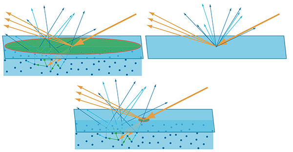
Figure 17。